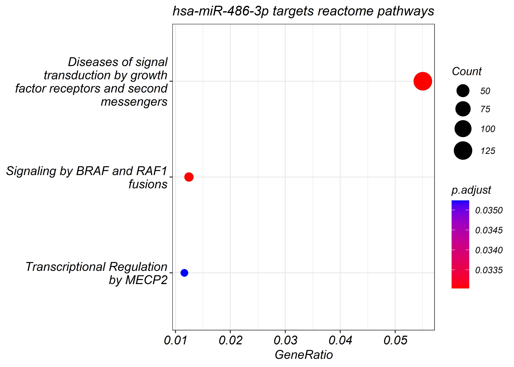

Enrichmet analysis - hsa-miR-486-3p targets
Enrichment
miR-486-3p
enrichment analysis purpose is to check if there are: pathways, molecular function, biological process & cellular components that is connected or related to this bio-marker target.
Libreris
pacman library purpose is to load multiple libraries from a vector
library(pacman)
lab <- c("GO.db","GOstats","cRegulome","readxl","ggplot2","tidyverse","R.utils","MeSHDbi","AnnotationHub",
"AnnotationDbi","org.Hs.eg.db","clusterProfiler","meshr","pathview","ReactomePA","meshes","tidyverse")
pacman::p_load(lab,install = FALSE,character.only = TRUE)Files
loading miR targets files acquired from mirWalk
mir486_3p_targets <-read.csv("miRWalk_miRNA_Targets_486_3p_3UTR.csv")
# annotations_ahb <- read.csv("annotations_ahb.csv")Head
mir486_3p_targets %>% head()## mirnaid refseqid genesymbol
## 1 hsa-miR-486-3p NM_145725 TRAF3
## 2 hsa-miR-486-3p NM_198217 ING1
## 3 hsa-miR-486-3p NM_024295 DERL1
## 4 hsa-miR-486-3p NM_004308 ARHGAP1
## 5 hsa-miR-486-3p NM_006390 IPO8
## 6 hsa-miR-486-3p NM_001042669 ARHGAP24
## duplex
## 1 CGGGGCAGCTCAGTACAGGAT#CCTGTGCCCTGAGCTCCCG#..(((.(((((((((((((..#)))))))..))))))))).
## 2 CGGGGCAGCTCAGTACAGGAT#TGCTGTATGTGAGCTGTA#....((((((((((((((.(.#).)))))).)))))))).
## 3 CGGGGCAGCTCAGTACAGGAT#GTCCCTGCTCTGCTGTCTCT#.((((((((..((((..((((#)))).))))..)))))))).
## 4 CGGGGCAGCTCAGTACAGGAT#TCCCTATCTGGTAGGCTGCCCTGC#(((((((((((((....(((.#)))....)))...)))))))))).
## 5 CGGGGCAGCTCAGTACAGGAT#CCTGCTGCTGGGGGGCTTTT#.(((((..(((((((((((..#)))).)))))))..))))).
## 6 CGGGGCAGCTCAGTACAGGAT#CTGTGCTGTTTGTGCCA#.((.((((..((((((((...#)))))))).)))).)).
## start end bindingp energy seed accessibility au phylopstem phylopflank
## 1 4050 4069 0.9538462 -25.8 0 1.931234e-03 0.250 0.0000000 0.0000000
## 2 1841 1859 0.9538462 -20.6 0 1.342227e-03 0.632 2.0375295 1.0278025
## 3 3060 3080 0.9538462 -20.5 1 6.949161e-02 0.618 0.4188013 1.3100478
## 4 1886 1910 0.9538462 -24.1 1 3.465340e-06 0.397 0.6887471 0.3595709
## 5 3892 3912 0.9538462 -20.8 0 8.965582e-05 0.485 3.9497398 4.8023135
## 6 2656 2673 0.9538462 -20.5 0 3.894453e-04 0.632 2.1409307 1.7314363
## me number_of_pairings binding_region_length
## 1 -6.857959 16 19
## 2 -9.546562 15 18
## 3 -8.093655 16 20
## 4 -5.762913 16 24
## 5 -7.650646 16 20
## 6 -9.124243 14 17
## longest_consecutive_pairings position validated TargetScan miRDB
## 1 9 3UTR 0 1
## 2 8 3UTR 0 0
## 3 8 3UTR 0 0
## 4 10 3UTR 0 1
## 5 7 3UTR 0 0
## 6 8 3UTR 0 0mir486_3p_targets %>% colnames()## [1] "mirnaid" "refseqid"
## [3] "genesymbol" "duplex"
## [5] "start" "end"
## [7] "bindingp" "energy"
## [9] "seed" "accessibility"
## [11] "au" "phylopstem"
## [13] "phylopflank" "me"
## [15] "number_of_pairings" "binding_region_length"
## [17] "longest_consecutive_pairings" "position"
## [19] "validated" "TargetScan"
## [21] "miRDB"Pre-Processing
colnames(mir486_3p_targets)[3] <- "SYMBOL"
colnames(mir486_3p_targets)[1] <- "miR"
colnames(mir486_3p_targets)[7] <- "score"maps the gene to ENTREZID
mir486_3p_targets$ENTREZ = mapIds(org.Hs.eg.db,
key = mir486_3p_targets$SYMBOL, # data to use for retrieval
column = "ENTREZID", # information to retreive for given data
keytype = "SYMBOL",multiVals = "first" )KEGG
clusterProfiler_KEGG_486_3p <- enrichKEGG(mir486_3p_targets$ENTREZ)
head(summary(clusterProfiler_KEGG_486_3p)[, -8])## ID Description GeneRatio BgRatio
## hsa04144 hsa04144 Endocytosis 80/1683 251/8292
## hsa04713 hsa04713 Circadian entrainment 38/1683 97/8292
## hsa04725 hsa04725 Cholinergic synapse 39/1683 113/8292
## hsa04728 hsa04728 Dopaminergic synapse 44/1683 132/8292
## hsa05163 hsa05163 Human cytomegalovirus infection 67/1683 225/8292
## hsa04010 hsa04010 MAPK signaling pathway 83/1683 294/8292
## pvalue p.adjust qvalue Count
## hsa04144 7.764621e-06 0.002311347 0.001768124 80
## hsa04713 1.388196e-05 0.002311347 0.001768124 38
## hsa04725 2.763010e-04 0.023492414 0.017971121 39
## hsa04728 2.821912e-04 0.023492414 0.017971121 44
## hsa05163 3.949912e-04 0.026306414 0.020123762 67
## hsa04010 5.727129e-04 0.027849950 0.021304529 83dotplot(clusterProfiler_KEGG_486_3p, showCategory=10) + labs(title ="hsa-miR-486-3p targets KEGG pathways")
GO analysis
BP analysis
clusterProfiler_bp_486_3p <- enrichGO(mir486_3p_targets$ENTREZ, ont="BP",OrgDb =org.Hs.eg.db)
summary(clusterProfiler_bp_486_3p)[,-8] %>% head()## ID
## GO:0010975 GO:0010975
## GO:0007265 GO:0007265
## GO:0031345 GO:0031345
## GO:0032535 GO:0032535
## GO:0043161 GO:0043161
## GO:1901888 GO:1901888
## Description
## GO:0010975 regulation of neuron projection development
## GO:0007265 Ras protein signal transduction
## GO:0031345 negative regulation of cell projection organization
## GO:0032535 regulation of cellular component size
## GO:0043161 proteasome-mediated ubiquitin-dependent protein catabolic process
## GO:1901888 regulation of cell junction assembly
## GeneRatio BgRatio pvalue p.adjust qvalue Count
## GO:0010975 128/3603 446/18903 4.050520e-07 0.002583827 0.002304107 128
## GO:0007265 103/3603 353/18903 2.375428e-06 0.003794737 0.003383925 103
## GO:0031345 64/3603 194/18903 2.590133e-06 0.003794737 0.003383925 64
## GO:0032535 106/3603 367/18903 2.847823e-06 0.003794737 0.003383925 106
## GO:0043161 125/3603 450/18903 3.450878e-06 0.003794737 0.003383925 125
## GO:1901888 66/3603 204/18903 3.861954e-06 0.003794737 0.003383925 66dotplot(clusterProfiler_bp_486_3p, showCategory=10)+ labs(title ="hsa-miR-486-3p targets BP GO")
goplot(clusterProfiler_bp_486_3p)
CC analysis
clusterProfiler_cc_486_3p <- enrichGO(mir486_3p_targets$ENTREZ, ont="CC",OrgDb =org.Hs.eg.db)
summary(clusterProfiler_cc_486_3p)[,-8] %>% head()## ID Description GeneRatio BgRatio pvalue
## GO:0070382 GO:0070382 exocytic vesicle 79/3786 226/19869 1.093423e-08
## GO:0008021 GO:0008021 synaptic vesicle 74/3786 208/19869 1.346856e-08
## GO:0097060 GO:0097060 synaptic membrane 116/3786 378/19869 2.969717e-08
## GO:0031252 GO:0031252 cell leading edge 124/3786 421/19869 1.321625e-07
## GO:0030133 GO:0030133 transport vesicle 124/3786 423/19869 1.758511e-07
## GO:0042734 GO:0042734 presynaptic membrane 52/3786 148/19869 2.792795e-06
## p.adjust qvalue Count
## GO:0070382 5.205599e-06 4.175254e-06 79
## GO:0008021 5.205599e-06 4.175254e-06 74
## GO:0097060 7.651971e-06 6.137415e-06 116
## GO:0031252 2.554041e-05 2.048519e-05 124
## GO:0030133 2.718658e-05 2.180554e-05 124
## GO:0042734 3.598051e-04 2.885888e-04 52dotplot(clusterProfiler_cc_486_3p, showCategory=10) + labs(title ="hsa-miR-486-3p targets CC GO")
goplot(clusterProfiler_cc_486_3p)
MF analysis
clusterProfiler_mf_486_3p <- enrichGO(mir486_3p_targets$ENTREZ, ont="MF",OrgDb =org.Hs.eg.db)
summary(clusterProfiler_mf_486_3p)[,-8] %>% head()## ID Description GeneRatio
## GO:0060090 GO:0060090 molecular adaptor activity 140/3717
## GO:0030674 GO:0030674 protein-macromolecule adaptor activity 103/3717
## GO:0004879 GO:0004879 nuclear receptor activity 23/3717
## GO:0098531 GO:0098531 ligand-activated transcription factor activity 23/3717
## GO:0008013 GO:0008013 beta-catenin binding 33/3717
## GO:0003779 GO:0003779 actin binding 121/3717
## BgRatio pvalue p.adjust qvalue Count
## GO:0060090 492/18432 5.209521e-06 0.006324359 0.005999175 140
## GO:0030674 347/18432 1.334855e-05 0.008102569 0.007685954 103
## GO:0004879 52/18432 7.225950e-05 0.020539875 0.019483763 23
## GO:0098531 52/18432 7.225950e-05 0.020539875 0.019483763 23
## GO:0008013 87/18432 9.768138e-05 0.020539875 0.019483763 33
## GO:0003779 439/18432 1.015150e-04 0.020539875 0.019483763 121dotplot(clusterProfiler_mf_486_3p, showCategory=20) + labs(title ="hsa-miR-486-3p targets MF GO")
goplot(clusterProfiler_mf_486_3p)
Reactome Pathways
reactome_486_3 <- enrichPathway(gene=mir486_3p_targets$ENTREZ, pvalueCutoff = 0.05, readable=TRUE)
dotplot(reactome_486_3,showCategory=10) + labs(title ="hsa-miR-486-3p targets reactome pathways")
MESH
# already created
# creating meshDBi
# ah <- AnnotationHub(localHub=TRUE)
# hsa <- query(ah, c("MeSHDb", "Homo sapiens"))
# file_hsa <- hsa[[1]]
# db <- MeSHDbi::MeSHDb(file_hsa)# meshes486 <- enrichMeSH(mir486_3p_targets$ENTREZ, MeSHDb = db, database='gendoo', category = 'C')
# saveRDS(meshes486,'meshes486.rds')
meshes486 <- readRDS('meshes486.rds')
dotplot(meshes486) + labs(title ="hsa-miR-486-3p targets mesh gendoo Diseases")
# saveRDS(meshes486,'meshes486.rds')# meshes486_pubmed <- enrichMeSH(mir486_3p_targets$ENTREZ, MeSHDb = db, database='gene2pubmed', category = 'C')
# dotplot(meshes486) + labs(title ="hsa-miR-486-3p targets mesh gene2pubmed Diseases")Session Info
sessionInfo()[6]## $basePkgs
## [1] "stats4" "stats" "graphics" "grDevices" "utils" "datasets"
## [7] "methods" "base"